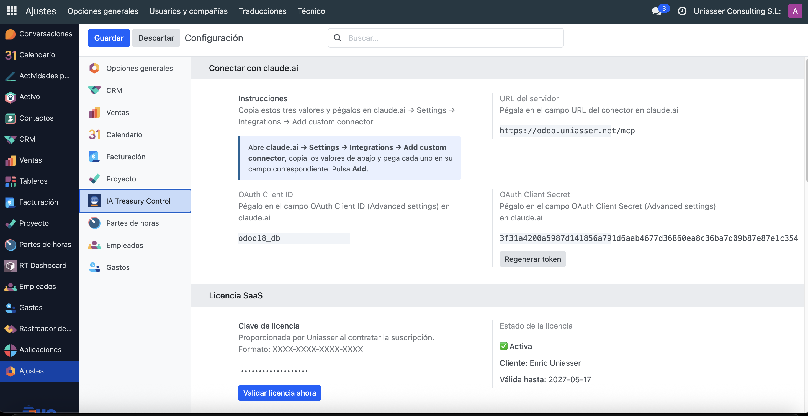

Connect claude.ai directly to your Odoo to manage treasury, taxation, invoices and timesheets using natural language. Just ask — Claude queries Odoo and replies with your company's real data.
Follow these three steps to connect claude.ai with your Odoo. Estimated time: 5 minutes.
XXXX-XXXX-XXXX-XXXX) and click "Validate license now".In Settings → IA Treasury Control → Connect with claude.ai you will see three values automatically generated when the module is installed:
You don't need to generate or configure anything — the module does it automatically upon installation.

https://yourodoo.com/mcp).Claude will authenticate automatically via OAuth and you'll have access to all financial tools.
15 financial tools available from natural language.
Full report of pending receivables/payables, real bank balance and cash flow forecast.
VAT, withholding tax and Corporate Tax status by quarter or fiscal year.
Create draft invoices, check pending amounts and view the account ledger.
Proposes and applies matches between bank transactions and invoices (optional: Nordigen/Plaid).
Log hours, create projects and tasks in Odoo from the chat.
Detects overdue invoices, negative cash and upcoming tax deadlines.
| Tool | Description | Area |
|---|---|---|
| get_treasury_report | Pending receivables/payables and configurable cash flow forecast | Treasury |
| get_bank_account_balances | Balances of all bank accounts (group 572) | Treasury |
| get_bank_account_statement | Bank statement with running balance by period | Treasury |
| get_tax_status | VAT, withholding tax and Corporate Tax estimate by quarter or year | Tax |
| create_draft_invoice | Creates a customer invoice draft from free text | Invoicing |
| process_email_invoices | OCR of PDFs from IMAP mailbox → supplier invoice draft | Invoicing |
| get_customer_pending_invoices | Pending receivables for a specific customer | Invoicing |
| get_account_ledger | Account ledger for any accounting account | Accounting |
| run_bank_reconciliation | Proposes matches between bank transactions and invoices | Reconciliation |
| apply_reconciliation | Creates draft payments for approved matches | Reconciliation |
| get_alerts | Alerts: overdue invoices, tax deadlines, negative cash | Alerts |
| create_timesheet_entry | Logs a timesheet entry (project / task / user / hours) | Timesheets |
| create_timesheet_project | Creates a project in Odoo | Timesheets |
| create_timesheet_task | Creates a task within an existing project | Timesheets |
| health_check | Checks the connection and module status in Odoo | System |
| Question | Answer |
|---|---|
| Do I need to configure anything on the server? | Almost nothing. The module self-configures upon installation. Just copy the details from Settings and paste them into claude.ai. If you use nginx as a reverse proxy, add proxy_buffering off for the /mcp route (see "System Administrators" section below). |
| Does Claude confirm invoices or payments automatically? | No. Everything stays as a draft in Odoo. You always confirm. |
| Do I need an Anthropic account or API Key? | No. The module works with your regular claude.ai account (Pro or Team plan). No API Key or additional Anthropic payment required. |
| Does it work on mobile? | Yes. The official Claude app (iOS and Android) also supports MCP connectors with OAuth authentication. |
| What happens if I regenerate the token? | You'll need to update the OAuth Client Secret in claude.ai with the new value. The "Regenerate token" button in Settings generates a new one in one click. |
| Is bank reconciliation mandatory? | No. It is completely optional. All other tools (treasury, tax, invoices, timesheets) work without configuring Nordigen or Plaid. |
| Does it work from WhatsApp? | Yes, by configuring n8n to forward messages to the /webhook/whatsapp endpoint. Contact info@uniasser.com for the setup guide. |
| Does it work with Odoo Community (CE)? | Yes. The module is compatible with both Community and Enterprise editions of Odoo 16, 17, 18 and 19. |
| How is the license renewed? | The SaaS license renews automatically each month. You'll receive an email notice before expiry. If the license expires, the module enters suspended mode until renewed. |
If Odoo runs behind an nginx reverse proxy (standard setup), the /mcp endpoint
requires the proxy to not buffer the response to support Server-Sent Events (SSE).
Without this, claude.ai cannot receive the server response.
Add this block to your nginx domain configuration, before the generic location /:
location = /.well-known/oauth-protected-resource {
proxy_pass http://127.0.0.1:8069/.well-known/oauth-protected-resource;
proxy_set_header Host $host;
proxy_set_header X-Real-IP $remote_addr;
proxy_set_header X-Forwarded-For $proxy_add_x_forwarded_for;
proxy_set_header X-Forwarded-Proto $scheme;
}
location /mcp {
proxy_pass http://127.0.0.1:8069/mcp;
proxy_http_version 1.1;
proxy_buffering off;
proxy_cache off;
proxy_set_header Host $host;
proxy_set_header X-Real-IP $remote_addr;
proxy_set_header X-Forwarded-For $proxy_add_x_forwarded_for;
proxy_set_header X-Forwarded-Proto $scheme;
proxy_set_header Connection '';
proxy_read_timeout 300s;
}
Reload nginx after the change:
sudo nginx -t && sudo systemctl reload nginx
If you use nginx as a reverse proxy, make sure your odoo.conf includes:
proxy_mode = True
The module must be loaded as server-wide to respond to OAuth routes before Odoo resolves the database. In odoo.conf:
server_wide_modules = base,web,ia_agents_treasury_control
If your Odoo manages multiple databases, add in odoo.conf:
dbfilter = ^your_database_name$
pip install anthropic structlog httpx PyJWT cryptography rapidfuzz
| Route | Method | Description |
|---|---|---|
/mcp | GET / POST | MCP protocol — financial tools |
/.well-known/oauth-protected-resource | GET | OAuth discovery (RFC 9728) |
/.well-known/oauth-authorization-server | GET | OAuth server metadata |
/mcp/oauth/authorize | GET | Authorization Code + PKCE |
/mcp/oauth/token | POST | Code exchange for token |
/oauth/register | POST | Dynamic OAuth client registration |
/webhook/whatsapp | POST | WhatsApp webhook via n8n |
curl -s https://yourodoo.com/.well-known/oauth-protected-resource | python3 -m json.tool
If you see a JSON with "resource" and "authorization_servers", the module is active.
| Odoo Version | Community (CE) | Enterprise |
|---|---|---|
| Odoo 16 | ✅ | ✅ |
| Odoo 17 | ✅ | ✅ |
| Odoo 18 | ✅ | ✅ |
| Odoo 19 | ✅ | ✅ |
account, project, hr_timesheet, mailanthropic, structlog, httpx,
PyJWT, cryptography, rapidfuzz| Support email | info@uniasser.com |
| Website | www.uniasser.com |
| Vendor | Uniasser Consulting S.L. |
| License | OPL-1 — Odoo Proprietary License v1 (SaaS subscription) |
© 2024-2026 Uniasser Consulting S.L. — All rights reserved.
Copying, redistribution or reverse engineering without written authorization is strictly prohibited.